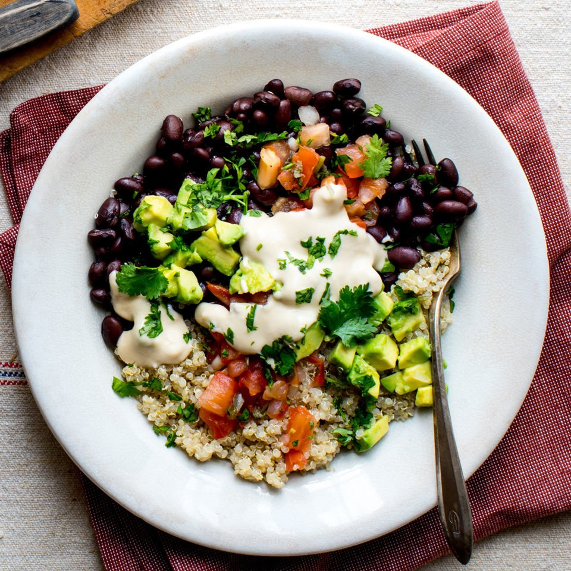

Black Bean and Rice Bowl

Description
This bowl is another cheap and easy recipe! You can expect to find a lot of these here because I am lazy and poor! If you are reading this then I feel like you might also be lazy and poor. Let's get right into it!
Ingredients
- 3/4 cup canned black beans
- 2/3 cup cooked quinoa
- 1/4 cup hummus
- 1 Tbsp lime juice
- 1/4 medium avocado, sliced
- 3 Tbsp pico de gallo
- 2 Tbsp chopped fresh cilantro
I just use rice instead of quinoa because I am poor. If you have tons of money feel free to use quinoa.
I ommit the cilantro because that shit is fucking gross.
Steps
- Combine beans and rice in bowl.
- Stir in hummus and lime juice in a seperate bowl; thin with water to desired consistency.
-
- Drizzle the hummus dressing over the beans and rice.
- Top with avocado, pico de gallo and not the cilantro.
Homepage